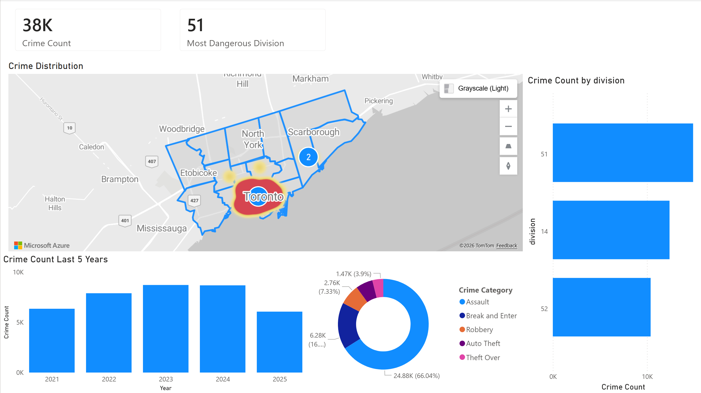
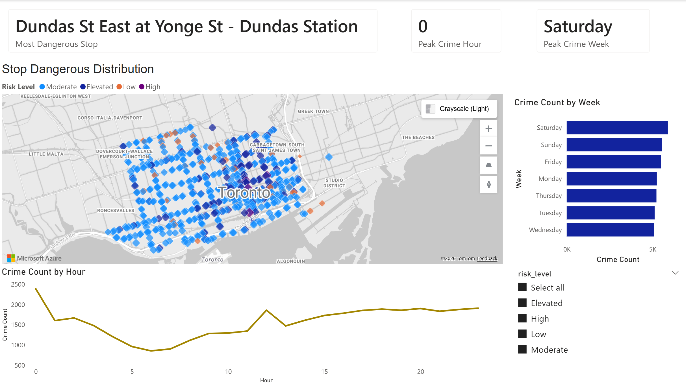
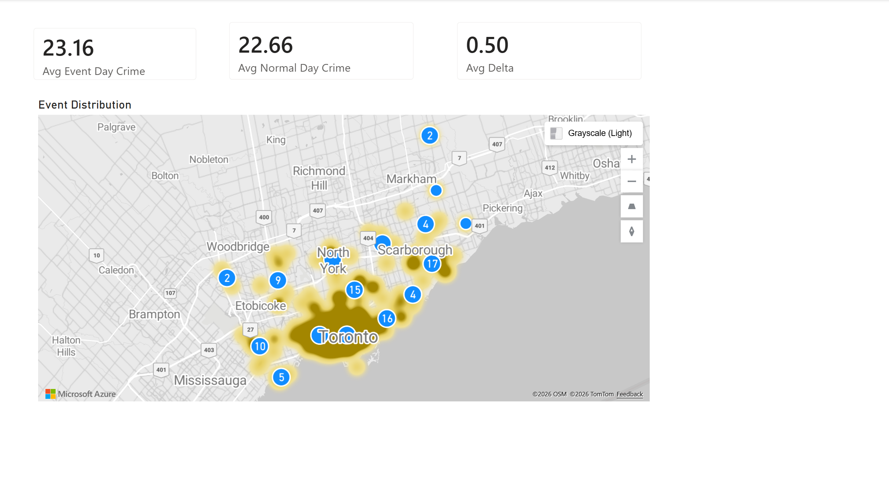

crime records linked to nearby TTC stops in the working dataset
Public safety analytics + transit operations
A decision-support system for Toronto Police Service that identifies which TTC stop areas need the most attention, when risk peaks, and where event-day pressure changes the picture.
This project combines TPS Major Crime Indicators, TTC GTFS transit data, and Toronto events data to convert raw records into an operational view of transit-adjacent safety risk. Instead of only describing crime after the fact, the website now frames the analysis as a proposed TPS solution for smarter patrol planning, event readiness, and resource allocation.
Python
Streamlit
Folium
Pandas
Power BI Design
Operational Analytics
transit stops with measurable stop-level crime exposure
high-risk stops surfaced by the baseline risk score
core downtown focus area covered by the analysis and exported dashboards
Project Inputs
Data used in this project
TPS Major Crime Indicators
Main incident dataset with crime date, division, category, and location coordinates.
- `data/Major_Crime_Indicators.csv`
- Used for time trends, division counts, crime categories, and spatial joins
TTC GTFS Stops + Stop Times
Transit reference data used to find the nearest TTC stop to each crime record.
- `data/Complete GTFS/stops.txt`
- `data/processed/stop_times_with_stops.csv.gz`
Toronto Events Feed
Special-event dates and locations used to classify event days versus normal days.
- `data/Festivals and events json feed.json`
- Supports event-day comparison and event hotspot views
Method
How the analysis works
Load and standardize source data
Crime records, TTC stops, stop times, and event feeds are normalized into consistent columns and date formats.
Attach each crime to the nearest TTC stop
Crimes are matched to the closest stop within a configurable 250-meter radius using haversine distance logic.
Score stop-level risk
A baseline risk score combines intensity and severity components with a 50/50 weighting.
Compare event days against normal days
Daily crime averages are calculated by stop to show which areas are more sensitive to event activity.
Proposed Solution
How this should be used by Toronto Police Service
The strongest part of the project is not the map itself. It is the operating model behind it: a simple way for TPS to prioritize stop areas, time windows, and event-sensitive locations using one joined analytical workflow.
Recommended Use Case
Deploy analytics where transit risk is concentrated, not evenly everywhere.
Current dashboards already show that crime exposure is concentrated around a small number of downtown stops, with especially heavy clustering near Yonge, Dundas, Union, Jarvis, Sherbourne, and Church-area nodes. That makes this a strong candidate for targeted deployment instead of blanket patrol coverage.
1. Hotspot deployment
Use the stop danger dashboard to create a priority watchlist of the highest-risk TTC stops for directed patrols and visible presence.
- Focus attention on the highest-risk and elevated-risk stop clusters
- Refresh the list on a fixed cadence using the same scoring logic
- Support supervisor briefings with stop-level rankings instead of raw incident tables
2. Time-based staffing
Use hourly and weekday patterns to shift resources toward the periods that consistently show more transit-adjacent crime activity.
- Late-day and evening windows are repeatedly heavier than early-morning periods
- Peak-hour views help decide when to emphasize patrol or outreach teams
- Supports scheduling decisions for focused overtime or surge coverage
3. Event-day readiness
Use the event-vs-normal comparison to identify stops where special events create above-baseline exposure and require pre-positioning.
- Flags stop areas where event-day averages materially exceed normal-day averages
- Helps TPS coordinate earlier with transit and event stakeholders
- Supports a more selective, evidence-based event deployment plan
Operational Insight
What the data is already saying
- Only four stops are classified as high-risk, which is useful for immediate prioritization.
- Division 51 currently carries the largest share of linked incidents in this working set.
- Several stop areas show event-day uplift, meaning event planning should not be citywide by default.
Recommended Next Step
Turn the dashboard into a recurring briefing product
- Weekly hotspot report for transit-adjacent stop clusters
- Event-day exception list for stops with positive crime delta
- Command-level summary page for patrol allocation and monitoring
Power BI Dashboard Gallery
Three Power BI dashboard views that support the proposed TPS workflow
The screenshots below show the Power BI reporting layer behind the proposal: a city-level overview, a stop-risk prioritization view, and an event-day comparison view.
Power BI Dashboard 01
Crime Overview
This view summarizes total crime volume, most dangerous division, long-term trends, crime categories, and citywide distribution.
- High-level KPI cards for non-technical audiences
- Division ranking and 5-year trend analysis
- Map-based spatial distribution of incidents

Power BI Dashboard 02
Stop Dangerous Analysis
This view focuses on TTC stops, highlighting the riskiest stop, peak crime hour, peak weekday, and risk-level distribution across the network.
- Risk-level map centered on transit stops
- Hour-of-day and weekday breakdowns
- Stop-level ranking for decision support

Power BI Dashboard 03
Event vs. Normal Day Comparison
This view compares average crimes per day on event days against normal days to identify stop areas that become more exposed during special events.
- Average event-day crime versus normal-day crime
- Delta-based comparison by stop
- Event-driven spatial pattern review

Project Value
This website now presents the project as a concrete TPS solution, not just a dashboard gallery.
It explains the problem, the data, the analytical method, and the operating model in one place. That makes it usable as a presentation companion, a portfolio artifact, or a lightweight proposal page for Toronto Police Service stakeholders.